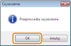

Jeśli na wydrukach pojawiają się plamy, należy wyczyścić rolkę utrwalającą, stosując następującą procedurę.
 |
Do oczyszczenia rolki utrwalającej wymagany jest zwykły papier w formacie A4. Przygotuj zwykły papier formatu A4.
|
1
Załaduj zwykły papier w formacie A4 do zasobnika uniwersalnego.
2
Kliknij [  ] w zasobniku zadań Windows, a następnie wybierz nazwę drukarki.
] w zasobniku zadań Windows, a następnie wybierz nazwę drukarki.
] w zasobniku zadań Windows, a następnie wybierz nazwę drukarki.
3
Z menu [Opcje] wybierz [Funkcja] → [Czyszczenie].

4
Kliknij [OK].
|
→
|
Papier zostanie pobrany, a drukarka zacznie czyścić rolkę utrwalającą.
|

|
UWAGA
|
||
|
Czas czyszczenia
Trwa to około 86 sekund.
|